Cell-to-cell variation analysis summary
Joyce Hsiao
2016-02-02
Last updated: 2016-02-15
Code version: afb6992553e07bb4a9f9437d4f2aebb9b973eb37
Objective
Analyze cell-to-cell heterogeneity in individual iPSC cell lines and identifies genes with differential cell-cell heterogeneity between individual iPSC cell lines. This document uses the final filtered data (poisson transformation).
Set up
library("data.table")
library("dplyr")
library("limma")
library("edgeR")
library("ggplot2")
library("grid")
theme_set(theme_bw(base_size = 12))
source("functions.R")
library("Humanzee")
library("cowplot")
library("MASS")
library("matrixStats")Prepare data
Input annotation of only QC-filtered single cells, with NA19098.r2 removed.
anno_filter <- read.table("../data/annotation-filter.txt",
header = TRUE,
stringsAsFactors = FALSE)
dim(anno_filter)[1] 560 5head(anno_filter, 2) individual replicate well batch sample_id
1 NA19098 r1 A01 NA19098.r1 NA19098.r1.A01
2 NA19098 r1 A02 NA19098.r1 NA19098.r1.A02Import molecule counts after filtering and before any correction.
molecules_filter <- read.table("../data/molecules-filter.txt",
header = TRUE, stringsAsFactors = FALSE)
stopifnot(NROW(anno_filter) == NCOL(molecules_filter))Import final processed molecule counts of endogeneous genes.
molecules_final <- read.table("../data/molecules-final.txt",
header = TRUE, stringsAsFactors = FALSE)
dim(molecules_final)[1] 12192 560stopifnot(NROW(anno_filter) == NCOL(molecules_final))Import gene symbols.
gene_symbols <- read.table(file = "../data/gene-info.txt", sep = "\t",
header = TRUE, stringsAsFactors = FALSE, quote = "")Helper functions
*plot_density
Per gene plot of overlaied density curves computed from individual cell lines.
plot_density_overlay <- function(molecules_ENSG, annotation,
individuals, batches = NULL,
which_gene, labels,
xlims = NULL, ylims = NULL, gene_symbols) {
if_present <- which(rownames(molecules_ENSG) == which_gene)
if(length(if_present) == 0) {
stop("Gene not present in the data")
}
library(scales)
library(broman)
crayon <- brocolors("crayon")
if (is.null(batches)) {
individuals <- unique(annotation$individual)
colors <- c("Sunset Orange", "Tropical Rain Forest", "Denim")
dens <- lapply(1:3, function(per_individual) {
which_individual <- annotation$individual == individuals[per_individual]
density(unlist( molecules_ENSG[ rownames(molecules_ENSG) == which_gene,
which_individual] ) )
})
if (is.null(xlims)) xlims <- range(sapply(dens, function(obj) obj$x))
if (is.null(ylims)) ylims <- range(sapply(dens, function(obj) obj$y))
plot(dens[[1]],
xlab = "log2 gene expression", main = "",
ylab = "Density", axes = F, lwd = 0, xlim = xlims, ylim = ylims)
for (i in 1:length(individuals)) {
polygon(dens[[i]],
col = alpha(crayon[colors[i]], .4),
border = "grey40")
}
axis(1); axis(2)
mtext(text = labels, side = 3)
title(main = with(gene_symbols,
external_gene_name[which(ensembl_gene_id == which_gene)]) )
}
if (!is.null(batches)) {
individuals <- unique(annotation$individual)
dens <- lapply(1:length(individuals), function(per_individual) {
which_individual <- annotation$individual == individuals[per_individual]
annotation_sub <- annotation[which_individual, ]
molecules_sub <- molecules_ENSG[ , which_individual]
replicates <- unique(annotation_sub$replicate)
dens_batch <- lapply(1:length(replicates), function(per_replicate) {
which_replicate <- annotation_sub$replicate == replicates[per_replicate]
density(unlist( molecules_sub[ rownames(molecules_ENSG) == which_gene,
which_replicate] ) )
})
})
if (is.null(xlims)) {
xlims <- range( c( sapply(dens, function(obj_individual) {
c( sapply(obj_individual, function(obj) {
range(obj$x)
}) )
}) ) )
}
if (is.null(ylims)) {
ylims <- range( c( sapply(dens, function(obj_individual) {
c( sapply(obj_individual, function(obj) {
range(obj$y)
}) )
}) ) )
}
colors <- c("Sunset Orange", "Tropical Rain Forest", "Denim")
for (i in 1:length(dens)) {
if (i == 1) col <- crayon["Sunset Orange"]
if (i == 2) col <- crayon["Tropical Rain Forest"]
if (i == 3) col <- crayon["Denim"]
plot(dens[[i]][[1]],
xlab = "log2 gene expression", main = "",
ylab = "Density", axes = F, lwd = 0, xlim = xlims, ylim = ylims)
for (j in 1:length(dens[[i]])) {
polygon(dens[[i]][[j]],
col = alpha(col, .4),
border = "grey40")
}
}
# first individual
# plot(dens[[1]][[1]],
# xlab = "log2 gene expression", main = "",
# ylab = "Density", axes = F, lwd = 0, xlim = xlims, ylim = ylims)
# for (j in 1:length(dens[[1]]) ) {
# polygon(dens[[1]][[j]], col = alpha(crayon[colors[1]], .4),
# border = "grey40") }
# # second individuadl
# plot(dens[[2]][[1]],
# xlab = "log2 gene expression", main = "",
# ylab = "Density", axes = F, lwd = 0, xlim = xlims, ylim = ylims)
# for (j in 1:length(dens[[2]]) ) {
# polygon(dens[[2]][[j]], col = alpha(crayon[colors[2]], .4),
# border = "grey40") }
# # third individual
# plot(dens[[3]][[1]],
# xlab = "log2 gene expression", main = "",
# ylab = "Density", axes = F, lwd = 0, xlim = xlims, ylim = ylims)
# for (j in 1:length(dens[[3]]) ) {
# polygon(dens[[3]][[j]], col = alpha(crayon[colors[3]], .4),
# border = "grey40") }
#
axis(1); axis(2)
mtext(text = labels, side = 3)
title(main = with(gene_symbols,
external_gene_name[which(ensembl_gene_id == which_gene)]) )
}
}CV-mean plots
From the existing RNAseq literature, we learn that gene counts follow an overdispersed poission distribution, i.e., a negative binomial distribution, and that the size of the overdispersion parameter may suggest the degree to which biological variation affects the underlying distribution (see the voom paper).
Here we examine visually the gene molecule counts for each individual cell lines, before any data transformation or batch-effect correction. Points marked blue are ERCC genes, based on the observed counts before data transformation and batch correction.
Red line is the lossy Poission line predicted based on ERCC genes.
Blue line is based on Poisson distribution.
Yellow line plots a poisson distribution which standard deviation is 3 times the size of its mean - an overdispersed poisson distribution.
Note: We decided to not make this plot for the entire data set, i.e., across the three cell lines. The goal of these plots are to assess the variation across the three C1 plates collected for each individual cell line.
*Helper function
plot_poisson_cv <- function(molecules_ENSG, molecules_ERCC,
is_log2count = FALSE,
include_observed_ERCC = TRUE,
main){
cbPalette <- c("#999999", "#0000FF", "#56B4E9", "#009E73",
"#F0E442", "#0072B2", "#D55E00", "#CC79A7")
library(matrixStats)
if (is_log2count == FALSE) {
molecules_ENSG <- as.matrix(molecules_ENSG)
molecules_ERCC <- as.matrix(molecules_ERCC)
# Remove genes with zero mean molecule count
which_ENSG_finite <- which(rowMeans(molecules_ENSG) > 0)
molecules_ENSG <- molecules_ENSG[which_ENSG_finite, ]
which_ERCC_finite <- which(rowMeans(molecules_ERCC) > 0)
molecules_ERCC <- molecules_ERCC[which_ERCC_finite, ]
}
if (is_log2count == TRUE) {
molecules_ENSG <- 2^as.matrix(molecules_ENSG)
molecules_ERCC <- 2^as.matrix(molecules_ERCC)
}
# defnine poisson function on a log x scale
ensg_cv <- sqrt(rowVars(molecules_ENSG))/rowMeans(molecules_ENSG)
poisson.c <- function (x) {
(10^x)^(0.5)/(10^x) + min(ensg_cv)
}
# compute the lossy factor based on ERCC
#### use maximum likelihood estimate
#### dont use the points from ERCC.mol.mean < 0.1 to fit.
ercc_mean <- rowMeans(molecules_ERCC)
ercc_cv <- sqrt(rowVars(molecules_ERCC))/rowMeans(molecules_ERCC)
require(MASS)
glm_fit <- glm.nb(round(ercc_mean[log10(ercc_mean) > 0]) ~ 1)
dispersion <- summary.glm(glm_fit)$dispersion
# ERCC poisson
lossy.posson <- function (x) {
1/sqrt((10^x)/dispersion) + min(ercc_cv)
}
# 3 s.d.
large_sd <- function (x) {
1/sqrt((10^x)/dispersion/3) + min(ensg_cv)
}
if (include_observed_ERCC == TRUE) {
return(
ggplot(rbind(data.frame(means = log10(rowMeans(molecules_ENSG)),
cvs = sqrt(rowVars(molecules_ENSG))/rowMeans(molecules_ENSG),
gene_type = rep(1, NROW(molecules_ENSG) ) ),
data.frame(means = log10(ercc_mean),
cvs = ercc_cv,
gene_type = rep(2, NROW(molecules_ERCC) ) ) ),
aes(x = means, y = cvs,
col = as.factor(gene_type) ) ) +
geom_point(size = 2, alpha = 0.5) +
stat_function(fun = poisson.c, col= "red") +
stat_function(fun = lossy.posson, col= "blue") +
stat_function(fun = large_sd, col = "yellow") +
scale_colour_manual(values = cbPalette) +
labs(x = "log10 average molecule count",
y ="Coefficient of variation (CV)",
title = main)
)
}
if (include_observed_ERCC == FALSE) {
return(
ggplot(rbind(data.frame(means = log10(rowMeans(molecules_ENSG)),
cvs = sqrt(rowVars(molecules_ENSG))/rowMeans(molecules_ENSG),
gene_type = rep(1, NROW(molecules_ENSG))),
data.frame(means = log10(ercc_mean),
cvs = ercc_cv,
gene_type = rep(2, NROW(molecules_ERCC)))),
aes(x = means, y = cvs, col = as.factor(gene_type)) ) +
geom_point(size = 2, alpha = 0.5) +
stat_function(fun = poisson.c, col= "red") +
scale_colour_manual(values = cbPalette) +
labs(x = "log10 average molecule count",
y ="Coefficient of variation (CV)",
title = main)
)
}
}theme_set(theme_bw(base_size = 8))
cowplot::plot_grid(
plot_poisson_cv(molecules_filter[grep("ERCC", rownames(molecules_filter),
invert = TRUE),
anno_filter$individual == "NA19098"],
molecules_filter[grep("ERCC", rownames(molecules_filter)),
anno_filter$individual == "NA19098"],
is_log2count = FALSE,
main = "Filtered counts, NA19098") +
theme(legend.position = "none"),
plot_poisson_cv(molecules_filter[grep("ERCC", rownames(molecules_filter),
invert = TRUE),
anno_filter$individual == "NA19101"],
molecules_filter[grep("ERCC", rownames(molecules_filter)),
anno_filter$individual == "NA19101"],
is_log2count = FALSE,
main = "Filtered counts, NA19101") +
theme(legend.position = "none"),
plot_poisson_cv(molecules_filter[grep("ERCC", rownames(molecules_filter),
invert = TRUE),
anno_filter$individual == "NA19239"],
molecules_filter[grep("ERCC", rownames(molecules_filter)),
anno_filter$individual == "NA19239"],
is_log2count = FALSE,
main = "Filtered counts, NA19239") +
theme(legend.position = "none"),
ncol = 2,
labels = LETTERS[1:4])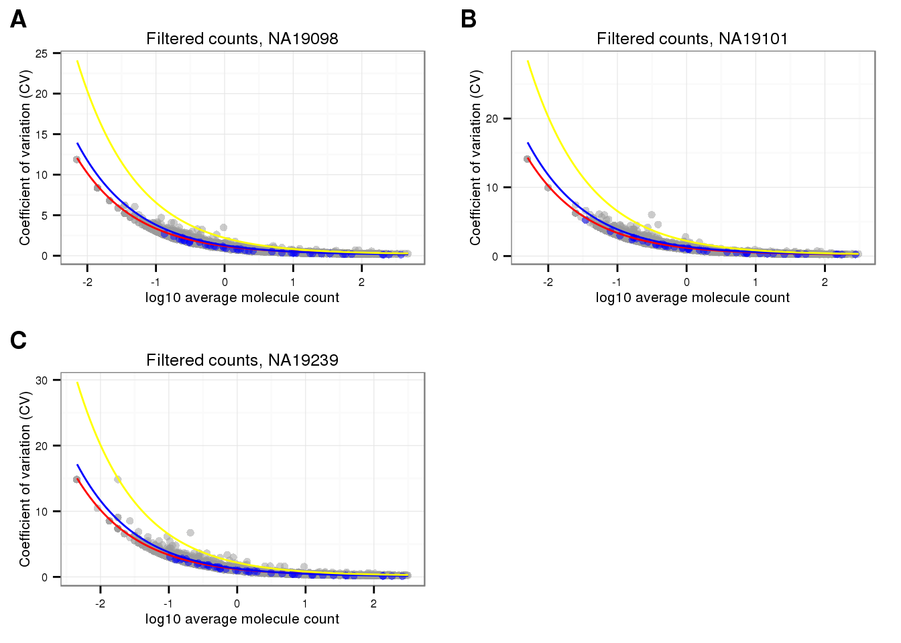
Cell-cycle or pluripotency?
cell_cycle_genes <- read.table("../data/cellcyclegenes.txt",
header = TRUE, sep = "\t",
stringsAsFactors = FALSE)
pluripotency_genes <- read.table("../data/pluripotency-genes.txt",
header = TRUE, sep = "\t",
stringsAsFactors = FALSE)$ToIdentify outlier genes and check if they are cell-cycle genes or pluripotent genes.
molecules_filter_ENSG <- molecules_filter[grep("ERCC", rownames(molecules_filter),
invert = TRUE), ]
individuals <- unique(anno_filter$individual)
cv_outlier_list <- lapply(1:3,
function(ii) {
ensg <- molecules_filter_ENSG[ ,anno_filter$individual == individuals[ii]]
ensg <- as.matrix(ensg)
ensg <- ensg[rowMeans(ensg) > 0, ]
ensg_cv <- sqrt(rowVars(ensg))/rowMeans(ensg)
ensg_mean <- rowMeans(ensg)
# ercc_mean <- rowMeans(molecules_cpm_ercc)
# glm_fit <- glm.nb(round(ercc_mean[log10(ensg_mean) > 0]) ~ 1)
# dispersion <- summary.glm(glm_fit)$dispersion
glm_fit <- glm.nb(round(ensg_mean) ~ 1)
dispersion <- summary.glm(glm_fit)$dispersion
# Define large genes
ii <- ensg_cv > (1/sqrt(ensg_mean/dispersion/3)) + min(ensg_cv)
summary(ii)
list(dispersion = dispersion,
min_cv = min(ensg_cv),
outlier_list = ii)
})
names(cv_outlier_list) <- individualsNumber of outlier genes
sapply(cv_outlier_list, function(xx) sum(xx[[3]], na.rm = TRUE))NA19098 NA19101 NA19239
3 3 4 Names of outlier genes
cv_outlier_ensg <- lapply(cv_outlier_list,
function(xx) {
ensg_id <- names(xx$outlier_list)[which(xx$outlier_list == TRUE)]
gene_names <-
do.call(c, lapply(1:length(ensg_id), function(i) {
one_gene_name <-
with(gene_symbols,
external_gene_name[which(ensembl_gene_id == ensg_id[i])])
if (length(one_gene_name) == 0) one_gene_name <- "NULL"
return(one_gene_name)
}) )
cell_cycle <-
do.call(c, lapply(1:length(ensg_id), function(i) {
is_cell_cycle <- sum(unlist(cell_cycle_genes) == ensg_id[i]) > 0
return(is_cell_cycle)
}) )
pluripotent <-
do.call(c, lapply(1:length(ensg_id), function(i) {
is_pluripotent <- sum(unlist(pluripotency_genes) == ensg_id[i]) > 0
return(is_pluripotent)
}) )
cbind(ensg_id, gene_names, cell_cycle, pluripotent)
})
cv_outlier_ensg$NA19098
ensg_id gene_names cell_cycle pluripotent
[1,] "ENSG00000255823" "MTRNR2L8" "FALSE" "FALSE"
[2,] "ENSG00000269028" "MTRNR2L12" "FALSE" "FALSE"
[3,] "ENSG00000198786" "MT-ND5" "FALSE" "FALSE"
$NA19101
ensg_id gene_names cell_cycle pluripotent
[1,] "ENSG00000255823" "MTRNR2L8" "FALSE" "FALSE"
[2,] "ENSG00000136147" "PHF11" "FALSE" "FALSE"
[3,] "ENSG00000269028" "MTRNR2L12" "FALSE" "FALSE"
$NA19239
ensg_id gene_names cell_cycle pluripotent
[1,] "ENSG00000255823" "MTRNR2L8" "FALSE" "FALSE"
[2,] "ENSG00000125148" "MT2A" "FALSE" "FALSE"
[3,] "ENSG00000269028" "MTRNR2L12" "FALSE" "FALSE"
[4,] "ENSG00000271043" "MTRNR2L2" "FALSE" "FALSE" Compute DM vlaues (distance-from-the-median)
- Compute Squared Coefficients of Variation across cells for each individual;
- Adjust Squared CVs for confounding effect with the mean:
- Compute rolling medians of gene expression levels,
- Compute Squared CVs corresponding to rolling medians of gene expression levels, deviation of adjusted CVs.
source("../code/cv-functions.r")Compute individual CVs.
ENSG_cv <- compute_cv(log2counts = molecules_final,
grouping_vector = anno_filter$individual)Adjust CVs for mean dependency.
ENSG_cv_adj <- normalize_cv(group_cv = ENSG_cv,
log2counts = molecules_final,
anno = anno_filter)Sanity-check plots.
Supplemenetal for the Methods section.
theme_set(theme_bw(base_size = 8))
plot_grid(
ggplot(data.frame(log10cv_1 = log10(ENSG_cv_adj$NA19098$cv^2),
log10cv_2 = log10(ENSG_cv_adj$NA19101$cv^2)),
aes(x = log10cv_1, y = log10cv_2)) +
geom_point(cex = .4) +
xlab("NA19098 log10 squared-CV values") +
ylab("NA19101 log10 squared-CV values") +
ggtitle("Relationship between individual DM values") +
theme(legend.position = "none"),
ggplot(data.frame(dm1 = ENSG_cv_adj$NA19098$log10cv2_adj,
dm2 = ENSG_cv_adj$NA19101$log10cv2_adj),
aes(x = dm1, y = dm2)) +
geom_point(cex = .4) +
xlab("NA19098 DM values") +
ylab("NA19101 DM values") +
ggtitle("Relationship between individual DM values") +
theme(legend.position = "none"),
ggplot(data.frame(dm = ENSG_cv_adj$NA19098$log10cv2_adj,
log10_mean = log10(ENSG_cv_adj$NA19098$mean)),
aes(x = log10_mean, y = dm)) +
geom_point(cex = .4) +
xlab("log10 average molecule count") +
ylab("DM values") +
ggtitle("NA19098") +
theme(legend.position = "none"),
ggplot(data.frame(dm = ENSG_cv_adj$NA19101$log10cv2_adj,
log10_mean = log10(ENSG_cv_adj$NA19101$mean)),
aes(x = log10_mean, y = dm)) +
geom_point(cex = .4) +
xlab("log10 average molecule count") +
ylab("DM values") +
ggtitle("NA19101") +
theme(legend.position = "none"),
ggplot(data.frame(dm = ENSG_cv_adj$NA19239$log10cv2_adj,
log10_mean = log10(ENSG_cv_adj$NA19239$mean)),
aes(x = log10_mean, y = dm)) +
geom_point(cex = .4) +
xlab("log10 average molecule count") +
ylab("DM values") +
ggtitle("NA19239") +
theme(legend.position = "none"),
ncol = 2,
labels = LETTERS[1:5] )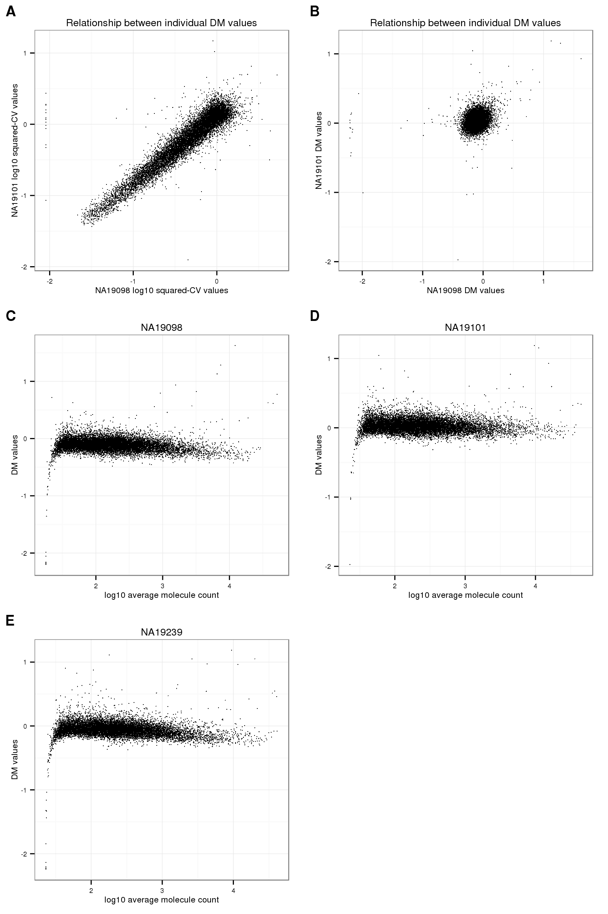
Check pluripotency and cell-cycle
Mark cell-cycle genes.
genes <- rownames(ENSG_cv[[1]])
ii_cellcycle_genes <- lapply(1:3, function(per_individual) {
genes %in% unlist(cell_cycle_genes)
})
names(ii_cellcycle_genes) <- names(ENSG_cv)
ii_cellcycle_genes <- do.call(c, ii_cellcycle_genes)
ggplot(data.frame(do.call(rbind, ENSG_cv_adj),
dm = c(ENSG_cv_adj$NA19098$log10cv2_adj,
ENSG_cv_adj$NA19101$log10cv2_adj,
ENSG_cv_adj$NA19239$log10cv2_adj) ),
aes(x = log10(mean), y = dm )) +
geom_point(aes(col = group), cex = 1.2) + facet_wrap( ~ group) +
ggtitle("Cell-cycle genes") +
geom_point(
data = subset(data.frame(do.call(rbind, ENSG_cv_adj),
dm = c(ENSG_cv_adj$NA19098$log10cv2_adj,
ENSG_cv_adj$NA19101$log10cv2_adj,
ENSG_cv_adj$NA19239$log10cv2_adj) ),
ii_cellcycle_genes),
colour = "grey20", cex = 1.2) +
labs(x = "log10 average gene expression level",
y = "DM values")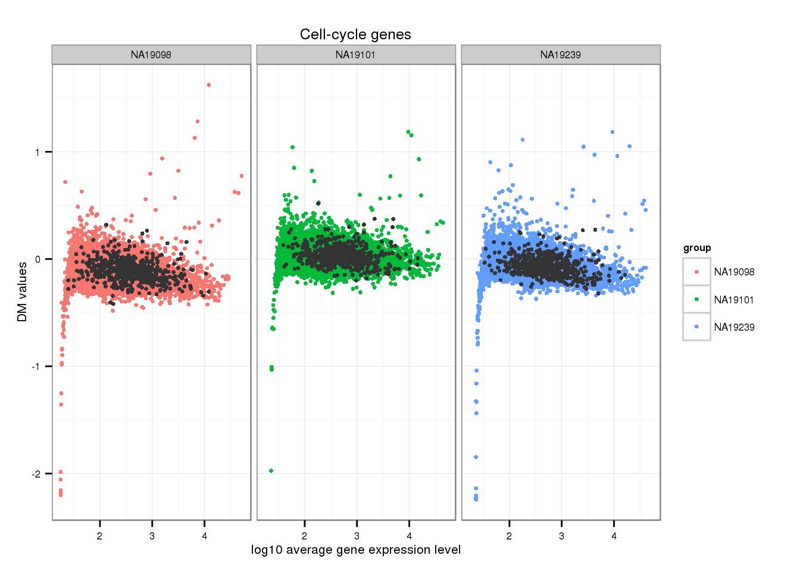
Mark pluripotent genes
ii_pluripotent_genes <- lapply(1:3, function(per_individual) {
genes %in% unlist(pluripotency_genes)
})
names(ii_pluripotent_genes) <- names(ENSG_cv)
ii_pluripotent_genes <- do.call(c, ii_pluripotent_genes)
ggplot(data.frame(do.call(rbind, ENSG_cv_adj),
dm = c(ENSG_cv_adj$NA19098$log10cv2_adj,
ENSG_cv_adj$NA19101$log10cv2_adj,
ENSG_cv_adj$NA19239$log10cv2_adj) ),
aes(x = log10(mean), y = dm )) +
geom_point(aes(col = group), cex = 1.2) + facet_wrap( ~ group) +
ggtitle("Pluripotent genes") +
geom_point(
data = subset(data.frame(do.call(rbind, ENSG_cv_adj),
dm = c(ENSG_cv_adj$NA19098$log10cv2_adj,
ENSG_cv_adj$NA19101$log10cv2_adj,
ENSG_cv_adj$NA19239$log10cv2_adj) ),
ii_pluripotent_genes),
colour = "grey20", cex = 1.2) +
labs(x = "log10 average gene expression level",
y = "DM values")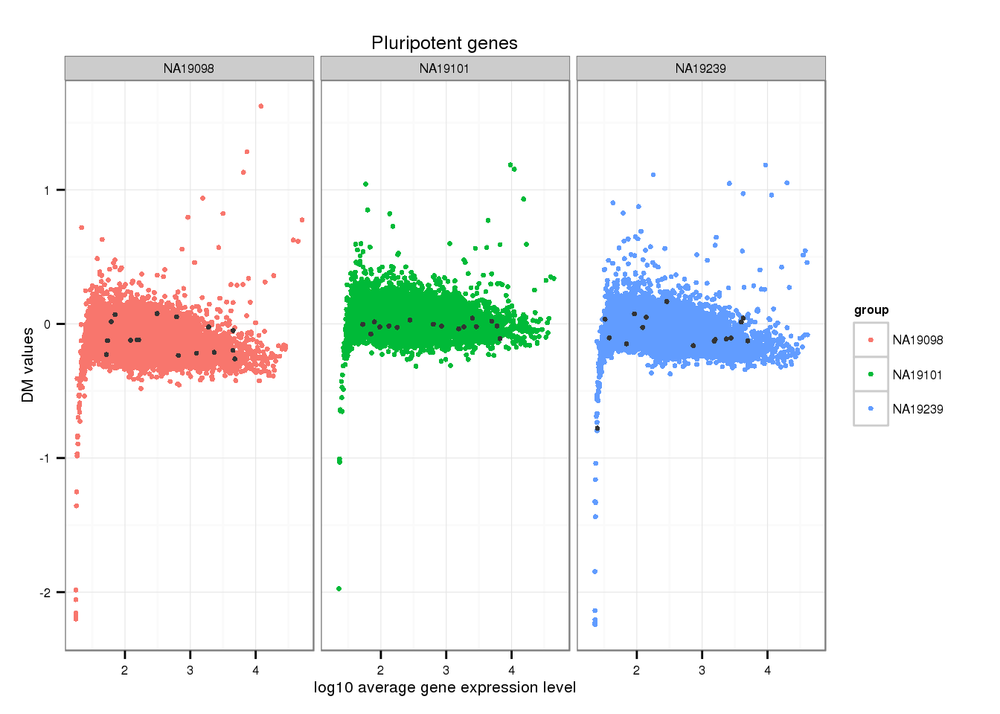
Top ranked DM genes
Venn diagram
Top 1000 genes based on DM.
genes <- rownames(ENSG_cv[[1]])
library(gplots)
venn_cv_rank <- gplots::venn(
list(NA19098 = genes[ which( rank(ENSG_cv_adj$NA19098$log10cv2_adj)
> length(genes) - 1000 ) ],
NA19101 = genes[ which( rank(ENSG_cv_adj$NA19101$log10cv2_adj)
> length(genes) - 1000 ) ],
NA19239 = genes[ which( rank(ENSG_cv_adj$NA19239$log10cv2_adj)
> length(genes) - 1000 ) ] ))
Bottom 1000 genes based on DM.
genes <- rownames(ENSG_cv[[1]])
library(gplots)
gplots::venn(
list(NA19098 = genes[ which( rank(ENSG_cv_adj$NA19098$log10cv2_adj)
<= 1000 ) ],
NA19101 = genes[ which( rank(ENSG_cv_adj$NA19101$log10cv2_adj)
<= 1000 ) ],
NA19239 = genes[ which( rank(ENSG_cv_adj$NA19239$log10cv2_adj)
<= 1000 ) ] ))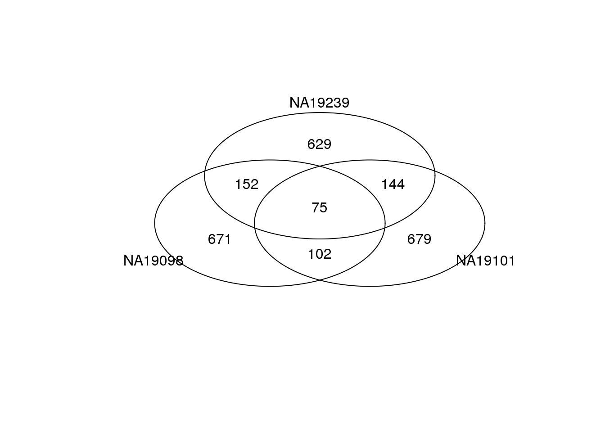
Top 1000 genes based on Means.
genes <- rownames(ENSG_cv[[1]])
library(gplots)
gplots::venn(
list(NA19098 = genes[ which(rank(ENSG_cv[[1]]$mean) > length(genes) - 1000 ) ],
NA19101 = genes[ which(rank(ENSG_cv[[2]]$mean) > length(genes) - 1000 ) ],
NA19239 = genes[ which(rank(ENSG_cv[[3]]$mean) > length(genes) - 1000 ) ] ) )Mark top ranked genes based on individual DM values.
df_plot <- data.frame(
cvs = c(ENSG_cv_adj[[1]]$log10cv2_adj, ENSG_cv_adj[[2]]$log10cv2_adj,
ENSG_cv_adj[[3]]$log10cv2_adj),
means = c(ENSG_cv[[1]]$mean, ENSG_cv[[2]]$mean, ENSG_cv[[3]]$mean),
individual = as.factor(rep(names(ENSG_cv), each = NROW(ENSG_cv[[1]])) ) )
cowplot::plot_grid(
ggplot( df_plot,
aes(x = log10(means), y = cvs ) ) +
geom_point( aes(col = as.factor(individual)), cex = 1.2 ) +
facet_wrap( ~ individual) +
labs(x = "log10 average gene expression level",
y = "DM values") +
geom_point(
data = df_plot[ rep( rank(ENSG_cv_adj$NA19098$log10cv2_adj)
> length(genes) - 1000, 3), ],
colour = "grey20", cex = 1.2 ) +
ggtitle("Top 1,000 genes in NA19098 based on DM values") +
theme(legend.position = "none"),
ggplot( df_plot,
aes(x = log10(means), y = cvs ) ) +
geom_point( aes(col = as.factor(individual)), cex = 1.2 ) +
facet_wrap( ~ individual) +
labs(x = "log10 average gene expression level",
y = "DM values") +
geom_point(
data = df_plot[ rep( rank(ENSG_cv_adj$NA19101$log10cv2_adj)
> length(genes) - 1000, 3), ],
colour = "grey20", cex = 1.2 ) +
ggtitle("Top 1,000 genes in NA19101 based on DM values") +
theme(legend.position = "none"),
ggplot( df_plot,
aes(x = log10(means), y = cvs ) ) +
geom_point( aes(col = as.factor(individual)), cex = 1.2 ) +
facet_wrap( ~ individual) +
labs(x = "log10 average gene expression level",
y = "DM values") +
geom_point(
data = df_plot[ rep( rank(ENSG_cv_adj$NA19239$log10cv2_adj)
> length(genes) - 1000, 3), ],
colour = "grey20", cex = 1.2 ) +
ggtitle("Top 1,000 genes in NA19239 based on DM values") +
theme(legend.position = "none"),
labels = LETTERS[1:4] ) 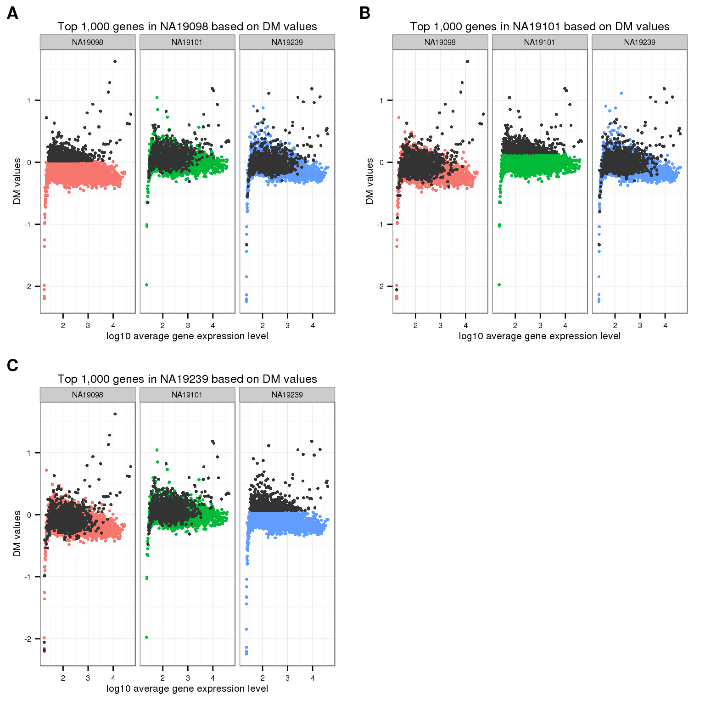
Compare DMs
Compute median of absolute deviations (MAD) to quantify dissimilarity of the individual DM meausres.
Compute MAD
library(matrixStats)
dm_matrix <- as.matrix(
data.frame(NA19098 = ENSG_cv_adj$NA19098$log10cv2_adj,
NA19101 = ENSG_cv_adj$NA19101$log10cv2_adj,
NA19239 = ENSG_cv_adj$NA19239$log10cv2_adj) )
mad <- rowMedians( abs( dm_matrix - rowMedians(dm_matrix) ) )Top 100 ranked genes by MAD.
ggplot(data.frame(do.call(rbind, ENSG_cv_adj),
dm = c(ENSG_cv_adj$NA19098$log10cv2_adj,
ENSG_cv_adj$NA19101$log10cv2_adj,
ENSG_cv_adj$NA19239$log10cv2_adj) ),
aes(x = log10(mean), y = dm )) +
geom_point(aes(col = group), cex = 1.2) + facet_wrap( ~ group) +
ggtitle("Top 1000 ranked genes by MAD") +
geom_point(
data = subset(
data.frame(do.call(rbind, ENSG_cv_adj),
dm = c(ENSG_cv_adj$NA19098$log10cv2_adj,
ENSG_cv_adj$NA19101$log10cv2_adj,
ENSG_cv_adj$NA19239$log10cv2_adj)),
rep(rank(mad) > length(genes) - 1000, times = 3) ),
colour = "grey20", cex = 1.2 ) +
labs(x = "log10 Mean gene expression level",
y = "MAD")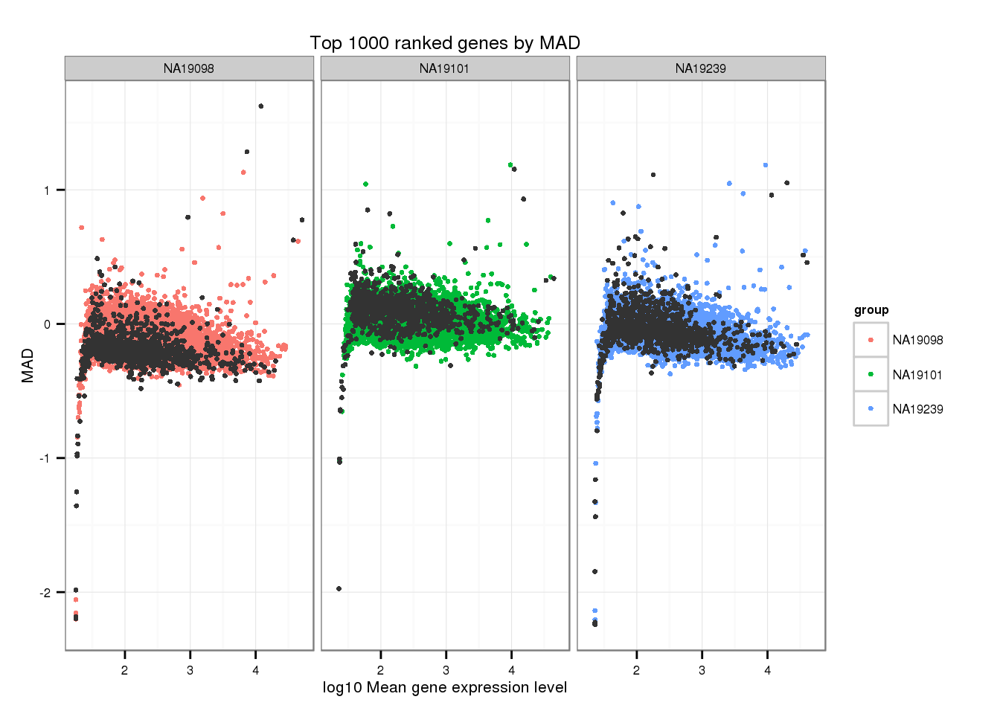
Export data to rda format and then transport them to midway for permutation-based test.
[Chunk not evaluted]
if (!file.exists("rda/cv-adjusted-summary-pois/adj-cv.rda")) {
save(mad, file = "rda/cv-adjusted-summary-pois/adj-cv.rda")
}
if (!file.exists("rda/cv-adjusted-summary-pois/permute-cv-test.rda")) {
save(molecules_final, anno_filter,
file = "rda/cv-adjusted-summary-pois/permute-cv-test.rda")
}Permutation-based test
All computations are done in midway.
Compute MAD based on permuted data.
[Chunk not evaluated]
sbatch permute-cv-test.sbatchCompute permutation-based p-values for each gene.
[Chunk not evaluated]
sbatch permuted-cv-compute-pval.sbatchImport permutation results.
load("../data/permuted-pval.rda")
sum(permuted_pval$mad_pval == 0)[1] 263Histogram of permuted p-values. Supplemental figure.
ggplot( data.frame(pvals = permuted_pval$mad_pval),
aes(x = pvals) ) +
geom_histogram() + xlim(0, 1) +
labs(x = "Permutation-based p-values", y = "Count")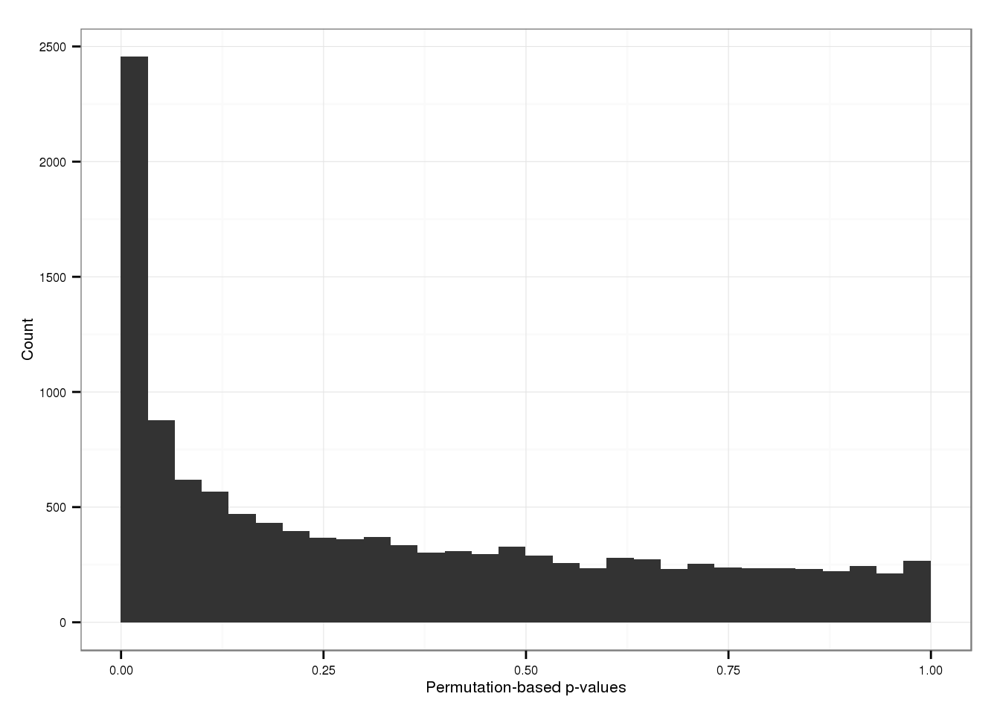
Permuted p-values versus mean gene expression. Supplemental figure?
ggplot( data.frame(pvals = permuted_pval$mad_pval,
gene_mean = rowMeans(as.matrix(molecules_final))),
aes(x = gene_mean, y = -log10(pvals) ) ) +
geom_point() 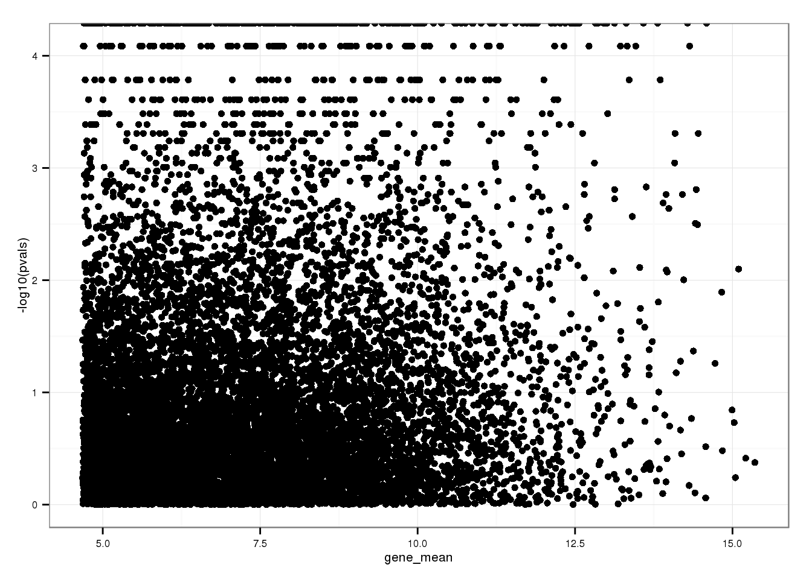
Export genes with significant MAD values.
genes_sig_mad <- data.frame(
ensg = rownames(molecules_final)[which(permuted_pval$mad_pval == 0)],
mad_value = mad[ which(permuted_pval$mad_pval ==0) ])
genes_sig_mad$gene_names <-
gene_symbols$external_gene_name[match(genes_sig_mad$ensg, gene_symbols$ensembl_gene_id)]
genes_sig_mad$is_cell_cycle <- genes_sig_mad$ensg %in% unlist(cell_cycle_genes)
genes_sig_mad$is_pluripotent <- genes_sig_mad$ensg %in% unlist(pluripotency_genes)
genes_sig_mad <- genes_sig_mad[order(genes_sig_mad$mad_value,
decreasing = TRUE), ]
head(genes_sig_mad) ensg mad_value gene_names is_cell_cycle is_pluripotent
182 ENSG00000053438 0.9604387 NNAT FALSE FALSE
127 ENSG00000141449 0.9591805 GREB1L FALSE FALSE
234 ENSG00000106153 0.5734047 CHCHD2 FALSE FALSE
157 ENSG00000198046 0.5457927 ZNF667 FALSE FALSE
187 ENSG00000184674 0.4592946 GSTT1 FALSE FALSE
210 ENSG00000164241 0.4389843 C5orf63 FALSE FALSEif (!file.exists("../data/sig-permute-gene.txt")) {
write.table(genes_sig_mad,
file = "../data/sig-permute-gene.txt",
col.names = TRUE, row.names = FALSE, sep = "\t",
quote = FALSE)
}Select columns from “sig-permute-gene.txt” for GO anlaysis on different platforms.
[Chunk not evaluated]
write.table(genes_sig_mad[ ,3],
file = "../data/sig-permute-gene-symbol-only.txt",
col.names = FALSE, row.names = FALSE, sep = "\t",
quote = FALSE)
write.table(genes_sig_mad[ ,1],
file = "../data/sig-permute-gene-ensg-only.txt",
col.names = FALSE, row.names = FALSE, sep = "\t",
quote = FALSE)
write.table(genes_sig_mad[,c(1,2)],
file = "../data/sig-permute-gene-ensg-and-pvalue.txt",
col.names = FALSE, row.names = FALSE, sep = "\t",
quote = FALSE)
}Genes with p = 0 sorted by MAD. Print out the density distributions to a pdf file for exploratory data analysis.
[Chunk not evaluated]
if(!file.exists("figure/cv-adjusted-summary-pois.Rmd/density-sig-mad.pdf")) {
pdf(file = "figure/cv-adjusted-summary-pois.Rmd/density-sig-mad.pdf",
height = 12, width = 8)
par(mfrow = c(5,4), cex = .7)
for(i in 1:dim(genes_sig_mad)[1]) {
plot_density_overlay(molecules_ENSG = molecules_final,
genes_sig_mad$ensg[i],
labels = round(genes_sig_mad$mad[i], 6),
gene_symbols = gene_symbols)
}
dev.off()
}Heatmap of differential genes
Print heatmaps of differential genes to a pdf file. These do not reveal any interesting patterns.
[Chunk not evaluated]
library(gplots)
library(broman)
crayon <- brocolors("crayon")
file_name <- "../analysis/figure/cv-adjusted-summary-pois.Rmd/heatmap-sig-genes.pdf"
if(!file.exists(file_name)) {
pdf(file = file_name,
height = 14, width = 10)
select_significant_genes <- which(permuted_pval$mad_pval == 0 )
for (individual in unique(anno_filter$individual)) {
xx <- molecules_final[ select_significant_genes,
anno_filter$individual == individual]
xx <- xx[order(mad[select_significant_genes], decreasing = TRUE), ]
heatmap.2(as.matrix(xx)[ order( mad[select_significant_genes] ), ],
breaks = seq(0, 9, by = 1),
symm = F, symkey = F, symbreaks = T, scale="none",
Rowv = TRUE, Colv = TRUE,
dendrogram = "both",
trace = "none",
labRow = with(gene_symbols,
external_gene_name[match(rownames(xx), ensembl_gene_id)] ),
labCol = "",
col = crayon[c("Violet Blue", "Pacific Blue", "Shamrock",
"Sea Green", "Sky Blue", "Yellow",
"Violet Red", "Mango Tango", "Scarlet")],
keysize = 1,
key.xlab = NULL, key.title = "log2 Gene expression")
}
dev.off()
}
file_name <- "../analysis/figure/cv-adjusted-summary-pois.Rmd/heatmap-sig-genes-all-individuals.pdf"
if(!file.exists(file_name)) {
pdf(file = file_name,
height = 10, width = 14)
select_significant_genes <- which(permuted_pval$mad_pval == 0 )
xx <- molecules_final[ select_significant_genes, ]
xx <- xx[order(mad[select_significant_genes], decreasing = TRUE), ]
heatmap.2(as.matrix(xx)[ order( mad[select_significant_genes] ), ],
breaks = seq(0, 9, by = 1),
symm = F, symkey = F, symbreaks = T, scale="none",
Rowv = TRUE, Colv = FALSE,
dendrogram = "row",
trace = "none",
labRow = with(gene_symbols,
external_gene_name[match(rownames(xx), ensembl_gene_id)] ),
labCol = "",
col = crayon[c("Violet Blue", "Pacific Blue", "Shamrock",
"Sea Green", "Sky Blue", "Yellow",
"Violet Red", "Mango Tango", "Scarlet")],
keysize = 1,
key.xlab = NULL, key.title = "log2 Gene expression")
dev.off()
}Pathway analysis
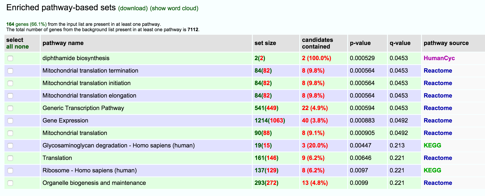
GO analysis
Gene Ontology Consortium
Search PANTHER database.

GOStats
Below is not run. The code here is based on annotation results from GOstats. We decided for now to use resutls from GO Ontology Consortium.
[Chunk not evaluated]
require(Humanzee)
# Find GO terms
sig_gene_go <- GOtest(rownames(molecules_final),
genes_sig_mad[,1],
ontology = "BP",
conditional.method = F)
# Prepare GO terms for heatmap plotting
go_data <- goHeatmapData(list(summary(sig_gene_go$GO$BP, pvalue = .01)))
# Plot heatmap
go_heatmap <- plotHeatmap(go_data,
labCol = "")Figures
I made figure 6 in powerpoint. We can figure out later how to combine the venn diagrams and the density plots nicely…
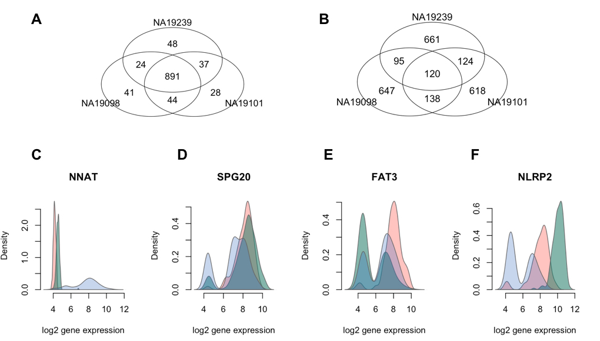
Legend:
Code for reproducing Figure 6 a-b
[Chunk not evaluted]
## Venn diagrams
genes <- rownames(ENSG_cv[[1]])
library(gplots)
venn_mean_rank <- gplots::venn(
list(NA19098 = genes[ which(rank(ENSG_cv[[1]]$mean) > length(genes) - 1000 ) ],
NA19101 = genes[ which(rank(ENSG_cv[[2]]$mean) > length(genes) - 1000 ) ],
NA19239 = genes[ which(rank(ENSG_cv[[3]]$mean) > length(genes) - 1000 ) ] ) )
venn_cv_rank <- gplots::venn(
list(NA19098 = genes[ which( rank(ENSG_cv_adj$NA19098$log10cv2_adj)
> length(genes) - 1000 ) ],
NA19101 = genes[ which( rank(ENSG_cv_adj$NA19101$log10cv2_adj)
> length(genes) - 1000 ) ],
NA19239 = genes[ which( rank(ENSG_cv_adj$NA19239$log10cv2_adj)
> length(genes) - 1000 ) ] ))Code for reproducing Figure 6c-f
NANOG and ZFP42: pluripotent genes, we found no significant individual difference in the Deviation-from-the-Median (DM) for these two genes. We also examined the density plots of
the other genes. See [here][link1].
[link1]: http://jdblischak.github.io/singleCellSeq/analysis/compare-distribution-pluripotency.html
I also picked two genes with significant individual differences.
*[Chunk not evaluted]*query_genes <- c("NANOG", "ZFP42", "NLRP2", "FAT3")
query_genes_ensg <- gene_symbols[which(gene_symbols$external_gene_name %in% query_genes), ]
query_genes_ensg <- query_genes_ensg[c(2,4,1,3), ]
par(mfrow = c(1,4))
for (i in 1:nrow(query_genes_ensg)) {
plot_density_overlay(molecules_ENSG = molecules_final,
annotation = anno_filter,
which_gene = query_genes_ensg$ensembl_gene_id[i],
# labels = round(genes_plot$dist[i], 6),
labels = "",
xlims = c(1,14), ylims = NULL,
gene_symbols = gene_symbols)
}Supplemental figure XX0.
Legend:
pluri_pvals <- data.frame(pvals = permuted_pval,
ENSG = rownames(molecules_final))
pluri_pvals <- pluri_pvals[which(rownames(molecules_final) %in%
pluripotency_genes), ]
pluri_symbols <- gene_symbols[which(gene_symbols$ensembl_gene_id %in% pluri_pvals$ENSG) ,
c(1,3)]
pluri_results <- merge(pluri_pvals, pluri_symbols,
by.x = c("ENSG"), by.y = "ensembl_gene_id")
pluri_results <- pluri_results[order(pluri_results$mad_pval), ]
pluri_results ENSG mad_pval external_gene_name
1 ENSG00000088305 0.000000000 DNMT3B
9 ENSG00000163530 0.001640420 DPPA2
11 ENSG00000179059 0.001722441 ZFP42
14 ENSG00000187140 0.004019029 FOXD3
16 ENSG00000204531 0.014107612 POU5F1
7 ENSG00000136997 0.020505249 MYC
8 ENSG00000148200 0.026738845 NR6A1
2 ENSG00000101115 0.035843176 SALL4
12 ENSG00000181449 0.053887795 SOX2
4 ENSG00000121570 0.054790026 DPPA4
15 ENSG00000203909 0.166830709 DPPA5
10 ENSG00000164362 0.229002625 TERT
6 ENSG00000128567 0.250656168 PODXL
5 ENSG00000124762 0.621555118 CDKN1A
3 ENSG00000111704 0.664452100 NANOG
13 ENSG00000184344 0.988763123 GDF3for (i in 1:nrow(pluri_results)) {
par(mfrow = c(1,3))
for (which_individual in unique(anno_filter$individual)) {
plot_density_overlay(
molecules_ENSG = molecules_final[ , anno_filter$individual == which_individual],
annotation = anno_filter[anno_filter$individual == which_individual, ],
individuals = anno_filter$individual,
batches = anno_filter$sample_id,
which_gene = pluri_results$ENSG[i],
labels = which_individual,
xlims = c(2,14),
gene_symbols = gene_symbols)
}
} 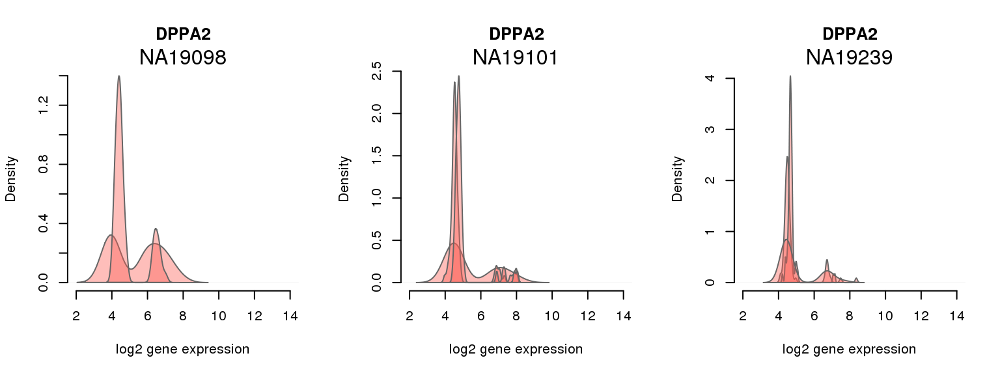
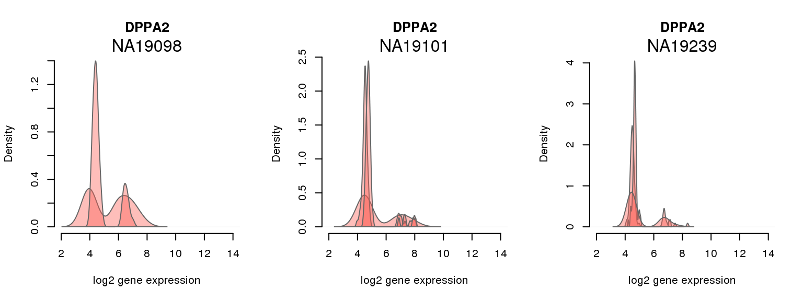


 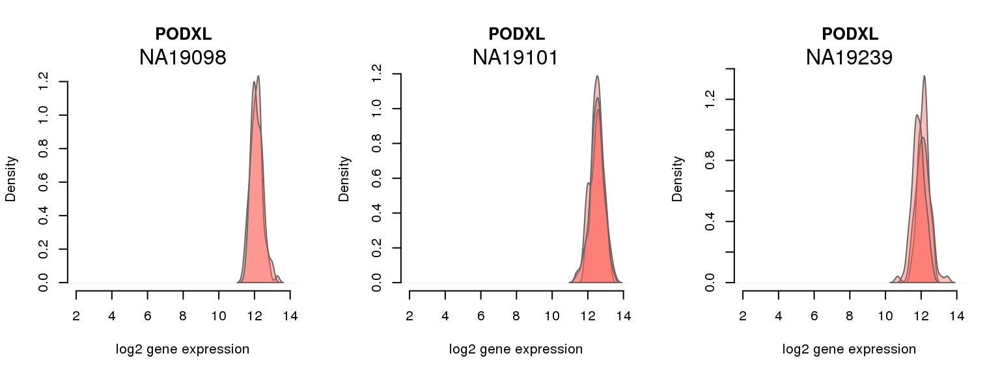
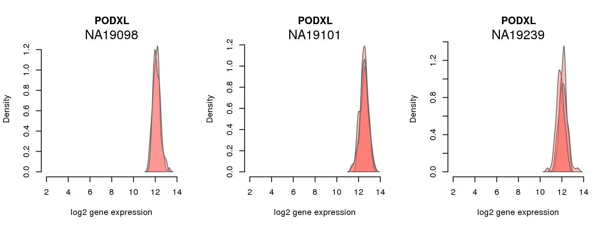


Supplemental figure XX1.
Legend: Coefficients of variation plotted against average molecule counts across cells of each individual cell line. Grey dots represent endogeneous genes, and blue dots indicate ERCC spike-in control genes. Red curve depicts the expected coefficients of variation assuming the endogeneous genes follow a poisson distribution. Likewise, blue curve depicts the expected CVs of the ERCC spike-in control genes. Yellow curve predicts the expected CVs assuming standard deviation is 3 times the ERCC spike-in genes.
theme_set(theme_bw(base_size = 12))
theme_update(panel.grid.minor.x = element_blank(),
panel.grid.minor.y = element_blank(),
panel.grid.major.x = element_blank(),
panel.grid.major.y = element_blank())
cowplot::plot_grid(
plot_poisson_cv(molecules_filter[grep("ERCC", rownames(molecules_filter),
invert = TRUE),
anno_filter$individual == "NA19098"],
molecules_filter[grep("ERCC", rownames(molecules_filter)),
anno_filter$individual == "NA19098"],
is_log2count = FALSE,
main = "Filtered counts, NA19098") +
theme(legend.position = "none"),
plot_poisson_cv(molecules_filter[grep("ERCC", rownames(molecules_filter),
invert = TRUE),
anno_filter$individual == "NA19101"],
molecules_filter[grep("ERCC", rownames(molecules_filter)),
anno_filter$individual == "NA19101"],
is_log2count = FALSE,
main = "Filtered counts, NA19101") +
theme(legend.position = "none"),
plot_poisson_cv(molecules_filter[grep("ERCC", rownames(molecules_filter),
invert = TRUE),
anno_filter$individual == "NA19239"],
molecules_filter[grep("ERCC", rownames(molecules_filter)),
anno_filter$individual == "NA19239"],
is_log2count = FALSE,
main = "Filtered counts, NA19239") +
theme(legend.position = "none"),
nrow = 1,
labels = LETTERS[1:3])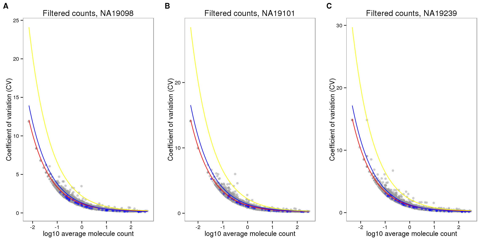
Supplemental figure XX2. Legend:
Investigating distance-to-the-median (DM). (A) to (C) correspond to cell lines NA19098, NA19101, NA19239. DM values of each gene are plotted against log10 of the average molecule counts.
plot_grid(
ggplot(data.frame(dm = ENSG_cv_adj$NA19098$log10cv2_adj,
log10_mean = log10(ENSG_cv_adj$NA19098$mean)),
aes(x = log10_mean, y = dm)) +
geom_point(cex = .4) +
xlab("log10 average molecule count") +
ylab("DM values") +
ggtitle("NA19098") +
theme(legend.position = "none"),
ggplot(data.frame(dm = ENSG_cv_adj$NA19101$log10cv2_adj,
log10_mean = log10(ENSG_cv_adj$NA19101$mean)),
aes(x = log10_mean, y = dm)) +
geom_point(cex = .4) +
xlab("log10 average molecule count") +
ylab("DM values") +
ggtitle("NA19101") +
theme(legend.position = "none"),
ggplot(data.frame(dm = ENSG_cv_adj$NA19239$log10cv2_adj,
log10_mean = log10(ENSG_cv_adj$NA19239$mean)),
aes(x = log10_mean, y = dm)) +
geom_point(cex = .4) +
xlab("log10 average molecule count") +
ylab("DM values") +
ggtitle("NA19239") +
theme(legend.position = "none"),
nrow = 1,
labels = LETTERS[4:6] )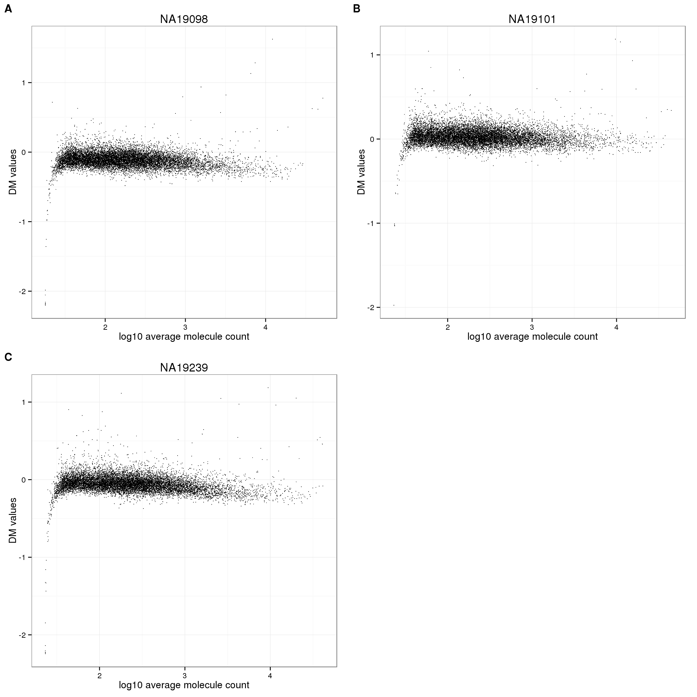
Supplemental XX3
Legend: (A) Histogram of empirical p-values based on 12,192 permutations. (B) -log10 empirical p-values are plotted against average gene expression levels. Blue line displays predicted -log10 p-values using locally weighted scatterplot smooth (LOESS). (C) Median of Absolute Deviation (MAD) of genes versus average gene expression levels. LOESS was also used to depict predicted MAD values.
# Bins average gene expression and make a boxplot of -log10 p-values
# for each bin
gene_means <- rowMeans(as.matrix(molecules_final))
plot_grid(
ggplot( data.frame(pvals = permuted_pval$mad_pval),
aes(x = pvals) ) +
geom_histogram() + xlim(0, 1) +
labs(x = "Permutation-based p-values", y = "Count"),
ggplot( data.frame(pvals = permuted_pval$mad_pval,
gene_mean = rowMeans(as.matrix(molecules_final)),
bins = cut_number(gene_means, n = 10)),
aes(x = gene_mean, y = -log10(pvals)) ) +
geom_point(alpha = .5, cex = .2) +
stat_smooth() +
theme(legend.position = "none") +
ylab("-log10(p-value)") +
xlab("Average gene expression level"),
ggplot( data.frame(mad = mad,
gene_mean = rowMeans(as.matrix(molecules_final)),
bins = cut_number(gene_means, n = 10)),
aes(x = gene_mean, y = mad) ) +
geom_point( alpha = .5, cex = .2) +
stat_smooth(col = 11) +
theme(legend.position = "none") +
ylab("Median of absolute deviation (MAD)") +
xlab("Average gene expression level"),
ncol = 2,
labels = LETTERS[1:3]
)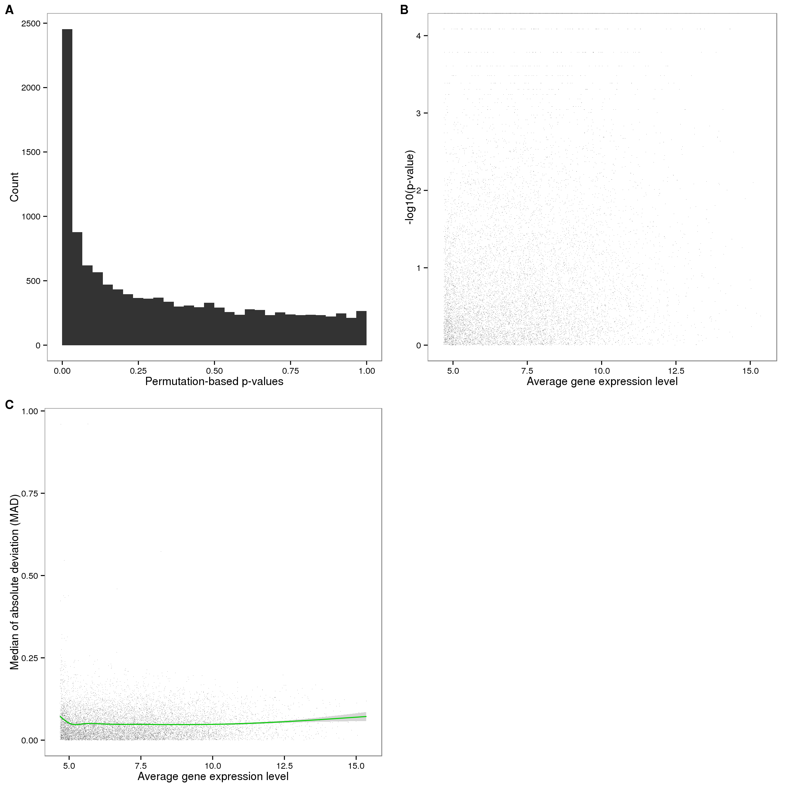
Session information
sessionInfo()R version 3.2.0 (2015-04-16)
Platform: x86_64-unknown-linux-gnu (64-bit)
locale:
[1] LC_CTYPE=en_US.UTF-8 LC_NUMERIC=C
[3] LC_TIME=en_US.UTF-8 LC_COLLATE=en_US.UTF-8
[5] LC_MONETARY=en_US.UTF-8 LC_MESSAGES=en_US.UTF-8
[7] LC_PAPER=en_US.UTF-8 LC_NAME=C
[9] LC_ADDRESS=C LC_TELEPHONE=C
[11] LC_MEASUREMENT=en_US.UTF-8 LC_IDENTIFICATION=C
attached base packages:
[1] grid stats graphics grDevices utils datasets methods
[8] base
other attached packages:
[1] mgcv_1.8-6 nlme_3.1-120 broman_0.59-5
[4] scales_0.2.4 gplots_2.17.0 zoo_1.7-12
[7] matrixStats_0.14.0 MASS_7.3-40 cowplot_0.3.1
[10] Humanzee_0.1.0 ggplot2_1.0.1 edgeR_3.10.2
[13] limma_3.24.9 dplyr_0.4.2 data.table_1.9.4
[16] knitr_1.10.5
loaded via a namespace (and not attached):
[1] Rcpp_0.12.0 formatR_1.2 plyr_1.8.3
[4] bitops_1.0-6 tools_3.2.0 digest_0.6.8
[7] evaluate_0.7 gtable_0.1.2 lattice_0.20-31
[10] Matrix_1.2-1 DBI_0.3.1 yaml_2.1.13
[13] parallel_3.2.0 proto_0.3-10 httr_0.6.1
[16] stringr_1.0.0 caTools_1.17.1 gtools_3.5.0
[19] R6_2.1.1 rmarkdown_0.6.1 gdata_2.16.1
[22] reshape2_1.4.1 magrittr_1.5 htmltools_0.2.6
[25] assertthat_0.1 colorspace_1.2-6 labeling_0.3
[28] KernSmooth_2.23-14 stringi_0.4-1 RCurl_1.95-4.6
[31] munsell_0.4.2 chron_2.3-45